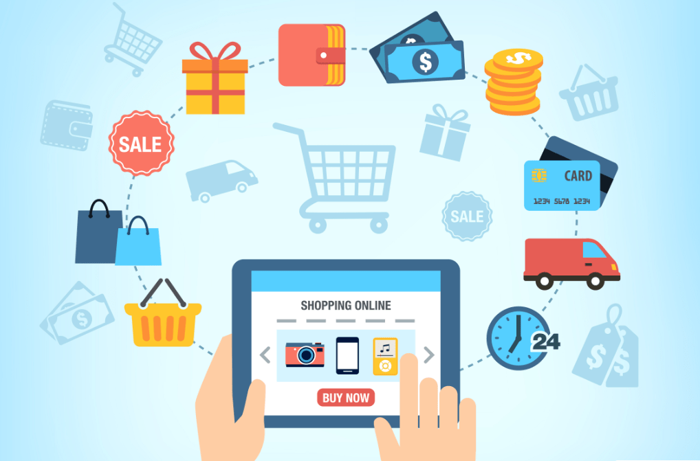

1.Introducción
Introducción:
A medida que el mercado crece de manera exponencial se han tomado en cuenta el crecimiento electrónico la cual te permite acceder a un público en especifico, a un nicho de mercado o al usuario adecuado, a la parte donde hay oportunidad de crecimiento.
De esta manera podras tener un margen mayo de mercado conociendo las necesidades haciedo y logrando

Por lo cual debes de tomar en cuenta el "sobre todo" hacia quien va dirigida la propuesta o la estratégia, el e-Comerce es un nuevo paso para poder incremetar tu mercado y crecimiento de tu empresa.
En oportunidad para emprender no existen barreras ni fronteras

Que es la B2C:
Bussiness to Customer: se refiere a la estrategia que desarrollan las empresas para llegar al consumidor final.
Conbinar E-comerce con redes Sociales:
Las redes sociales son una herramienta de comunicación básica y se tomaria en cuenta como el medio que son para poder llegar al consumidor optando con publicidad y al acercamiento de ventaja que tienen.